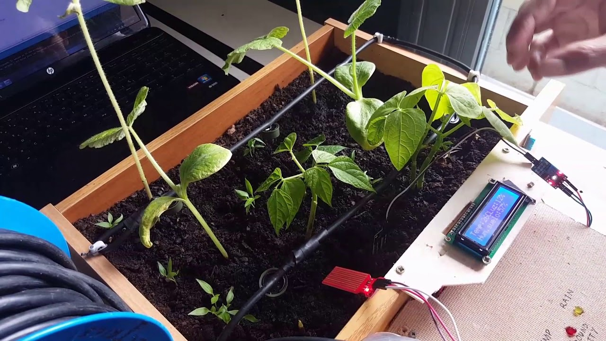

DESARROLLO DEL PROTOTIPO
En la sexta semana, nos centramos en el desarrollo del prototipo del sistema de riego automatizado. Después de realizar todos los ajustes y planificar el diseño, procedimos a la construcción del prototipo físico y la integración de todos los componentes. Esta etapa fue clave para validar las ideas previas y ver cómo se comporta el sistema en un entorno real.
El desarrollo del prototipo incluyó la instalación de los sensores de humedad y la bomba de agua en el sistema de riego. Utilizamos un Arduino UNO como el cerebro del sistema, que controla el funcionamiento de los sensores y la bomba de agua a través de un módulo relé. El objetivo principal fue crear un sistema funcional que pudiera automatizar el riego de las plantas según el nivel de humedad del suelo.
Pruebas del Prototipo
Una vez que el prototipo estuvo ensamblado, realizamos una serie de pruebas para verificar que todo estuviera funcionando correctamente. Durante las pruebas, medimos la capacidad del sistema para detectar la humedad del suelo y activar la bomba de agua cuando el nivel de humedad estaba por debajo del umbral establecido.
Además, evaluamos la respuesta del sistema a diferentes condiciones, como el cambio de temperatura y la variabilidad en los niveles de humedad. Esto nos permitió hacer ajustes en el código y la configuración del sensor para mejorar la precisión y eficiencia del sistema. Las primeras pruebas fueron exitosas, y pudimos observar que el sistema automatizado funcionaba correctamente para regar las plantas.
Desafíos y Ajustes
Durante el proceso de desarrollo, enfrentamos algunos desafíos relacionados con la conexión de los componentes y la calibración de los sensores. Afortunadamente, pudimos solucionarlos mediante ajustes en el código y pequeñas modificaciones en el montaje. También ajustamos la frecuencia de riego para evitar un riego excesivo o insuficiente de las plantas.
Con los ajustes realizados, el prototipo se volvió más confiable, y se acercó mucho más a la solución que habíamos planeado. Aunque aún quedan algunos detalles por mejorar, los resultados iniciales nos dieron una buena base para continuar con el desarrollo y la mejora del sistema en las siguientes semanas.